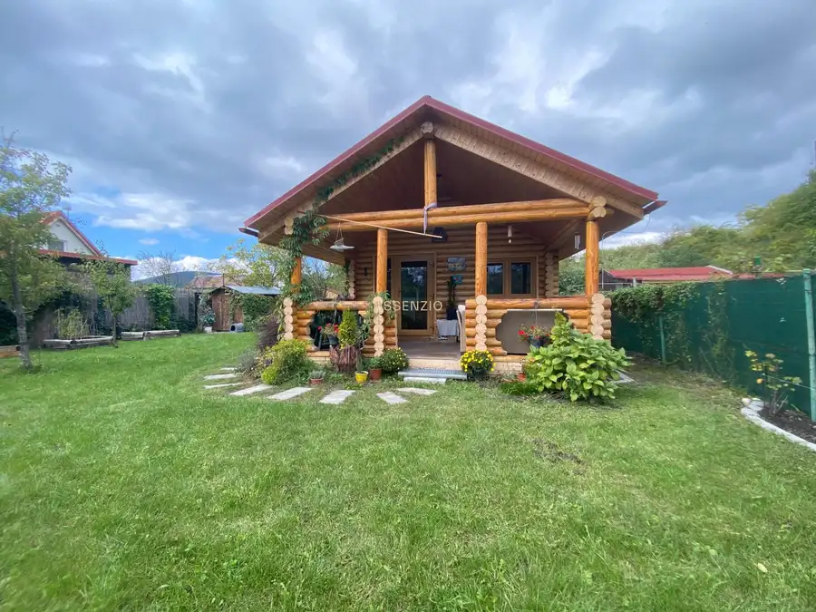
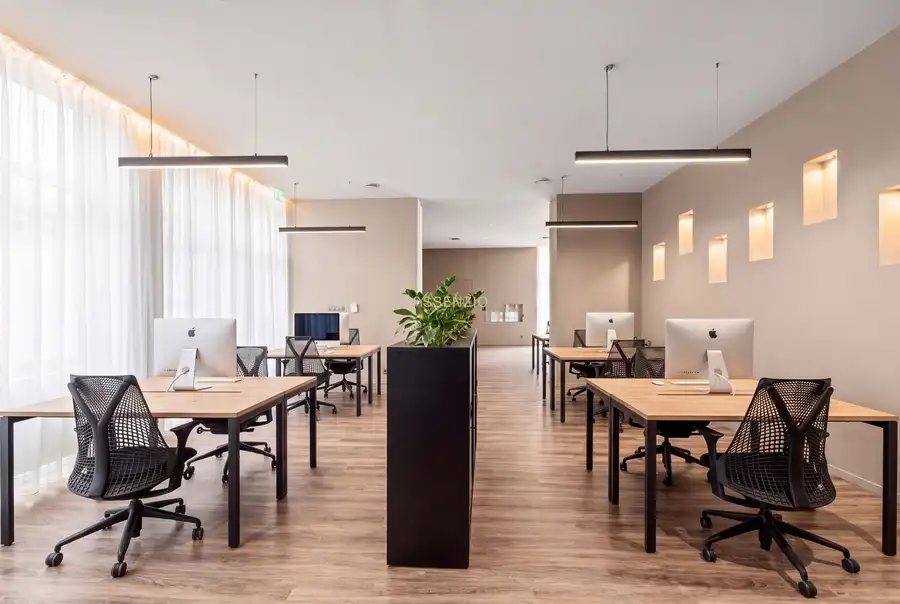
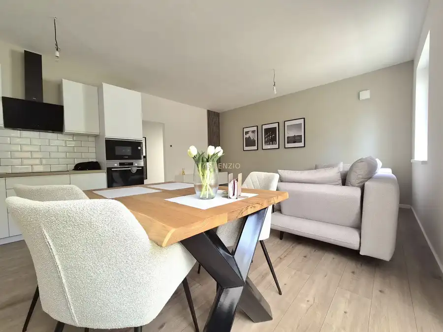

Rodinný dom len kúsok od Horského parku
Staré Mesto, Bratislava
- Plocha182 m²
- Poschodie0. z 1
- Stavpôvodný
- Vlastníctvoosobné
O nehnuteľnosti
Výnimočné spojenie kľudnej atmosféry, slnečného pozemku a veľkorysej dispozície charakterizuje túto jedinečnú nehnuteľnosť. Bývanie na prestížnej adrese zaručuje dokonalé súkromie bez nutnosti kompromisov v dostupnosti do centra.
ZÁKLADNÉ INFORMÁCIE
Lokalita: Západný rad, Staré Mesto, Bratislava
Typ: Rodinný dom
Úžitková plocha domu 1. a 2. NP: 182,15 m² + 37,01 balkóny a terasy
Pivnica: 30 m²
Záhradný domček: cca 15 m²
Garáž: 14,20 m²
Výmera pozemku: 421 m²
Rok výstavby: 50. roky 20. storočia
Prístavba: Samostatná garáž (rok 1963)
Stav: Pôvodný stav (ideálny na rekonštrukciu podľa vlastných predstáv)
DISPOZÍCIA DOMU A JEHO POTENCIÁL
Tento historický rodinný dom ponúka novému majiteľovi obrovský potenciál na modernizáciu a nadštandardné preformovanie priestoru presne podľa vlastných predstáv. Dispozícia domu je navrhnutá veľmi prakticky a komfortne na troch podlažiach:
V suteréne (1. PP) sa nachádzajú dve samostatné miestnosti, kotolňa a ďalšia miestnosť, čo môže byť štýlová vináreň či sklad.
Prízemie (1. NP) tvorí vstupná predsieň, hosťovská izba, priestranná obývacia izba, jedáleň, samostatná kuchyňa, kúpeľňa a praktická špajza.
Na poschodí (2. NP) sa nachádzajú štyri samostatné spálne, druhá kúpeľňa, šatník, balkón a priestranná terasa. K domu prislúcha aj samostatná murovaná garáž na pozemku. Vďaka štyrom samostatným spálňam a veľkému slnečnému pozemku je dom ideálnou voľbou pre väčšiu rodinu, ktorá hľadá bezpečné zázemie a vlastnú záhradu.
LOKALITA A OBČIANSKA VYBAVENOSŤ
Nehnuteľnosť sa nachádza na jednej z najtichších a najprestížnejších adries v rámci tejto vyhľadávanej mestskej časti. Slepá ulica ponúka absolútny pokoj v prostredí plnom zelene, no zároveň si zachováva rýchlu dostupnosť do samého centra Bratislavy. Len pár minút chôdze od domu sa nachádzajú zastávky MHD a kompletná občianska vybavenosť vrátane materských či základných škôl. Každodenný komfort bývania dopĺňajú blízke potraviny Kraj, Yeme a pešou chôdzou dostupný Kaufland, ktoré zabezpečujú rýchle nákupy. Bývanie na tejto adrese si dlhodobo drží najvyššiu hodnotu a je ideálne pre náročných klientov, investorov hľadajúcich reprezentačné firemné sídlo, alebo pre milovníkov architektúry, ktorí chcú vdýchnuť historickému objektu nový, moderný život.
CENA
670 000€ – vrátane kompletného právneho servisu a provízie realitnej kancelárie Assenzio.
KONTAKT A OBHLIADKA
Pre viac informácií, technické podrobnosti alebo dohodnutie obhliadky nás neváhajte kontaktovať. O celý proces kúpy, vrátane zabezpečenia financovania a všetkých potrebných náležitostí, sa postará spoločnosť ASSENZIO, aby bol pre vás bezstarostný a plynulý.
Fotodokumentáciu zabezpečilo naše špecializované oddelenie. Radi vám pomôžeme s efektívnym a profesionálnym predajom či prenájmom aj vašej nehnuteľnosti. Neváhajte nás nezáväzne kontaktovať – tešíme sa na spoluprácu.
Použité fotografie v inzeráte predstavujú vizualizácie možného budúceho stavu po rekonštrukcii. Text a vizualizácie sú autorským dielom a majetkom spoločnosti ASSENZIO.
Parametre
| Rozloha pozemku | 421 m² |
|---|---|
| Zastavaná plocha | 182 m² |
| Úžitková plocha | 182 m² |
| Poschodie | prízemie |
| Počet poschodí | 1 |
| Vlastníctvo | osobné |
| Stav | pôvodný |
| Odvoz odpadu | áno - separovaný |
| Voda | verejný vodovod |
| El. napätie | 230V |
| Plyn | áno |
| Kanalizácia | áno |
| Kúpeľňa | vaňa |
| Balkón | áno |
| Lódžia | nie |
| Terasa | áno |
| Pivnica | áno |
| Garáž | áno |
| Parkovanie | vnútorné |
| Inžinierske siete | áno |
| Postavené z | tehla |
| Zariadenie | zariadený |
| Krb | nie |
| Klimatizácia | nie |
| Energetický certifikát | nie |
| Predzáhradka | áno |
| Bezbariérový prístup | nie |
| Okná | plastové |
| Terén | rovina |
| Prístupová cesta | betónová cesta |
| Dátum zverejnenia | 10. 6. 2026 |
Kde to je
Mohlo by Vás zaujímať

Chaty a chalupy7 99 290 €Zrubový domček na Žabom majeri Rača, Bratislava 25 m² Assenzio Property ponúka na predaj zrubový domček, ktorá sa nachádza vo vyhľadávanej záhradkárskej oblasti Žabí majer – Rača v Bratislave. ZÁKLADNÉ…
Nebytové priestory10 318 000 €Ideálny priestor pre vaše podnikanie vo vyhľadávanej lokalite Petržalka, Bratislava 159.71 m² Hľadáte priestory pre svoje podnikanie? Kancelárie, skladové priestory, či gastro prevádzku? Ponúkame na predaj nebytové priestory vhodné na…
Byt10 Cena dohodouPriestranný 3 izbový byt so záhradkou a parkovaním Lehnice 3-izbový69.31 m² Ak hľadáte bývanie ako v rodinnom dome s výhodami vlastnej záhradky, tak ste na správnom mieste! Assenzio ponúka na prenájom 3 izbový byt s vlastnou…